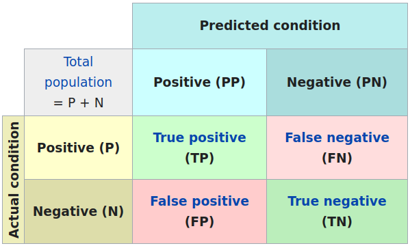
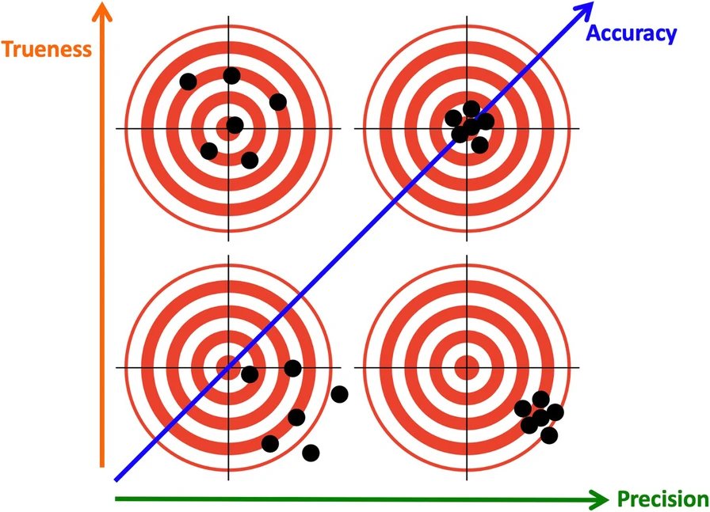
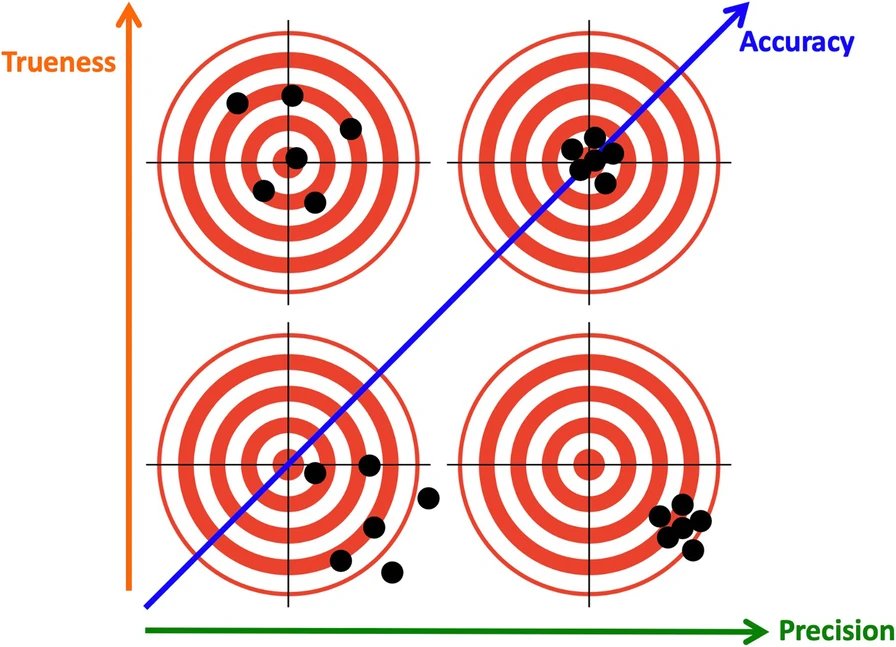
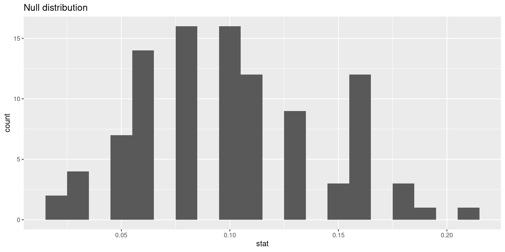

W#10: Performance Metrics, Cross validation, Hypothesis testing, Math: Probability
Jan Lorenz
Linear Model for Attitudes on European Integration
Model purpose: Predict EU attitudes
ess <- ess_raw |> filter(essround == 9) |>
select(cntry, euftf, atchctr, atcherp, imueclt, lrscale) |>
mutate(euftf = euftf |> na_if(77) |> na_if(88) |> na_if(99),
atchctr = atchctr |> na_if(77) |> na_if(88) |> na_if(99),
atcherp = atcherp |> na_if(77) |> na_if(88) |> na_if(99),
imueclt = imueclt |> na_if(77) |> na_if(88) |> na_if(99),
lrscale = lrscale |> na_if(77) |> na_if(88) |> na_if(99))For the ESS dataset
- we filter for people from round 9 (2018)
- select 5 attitude variables and
cntrywith 29 countries: AT, BE, BG, CH, CY, CZ, DE, DK, EE, ES, FI, FR, GB, HR, HU, IE, IS, IT, LT, LV, ME, NL, NO, PL, PT, RS, SE, SI, SK - recode
NA’s properly for five variables:
euftf: European Union: European unification go further (=10) or gone too far (=0)
atchctr: How emotionally attached to [country] (0 to 10)
atcherp: How emotionally attached to Europe (0 to 10)
imueclt: Country’s cultural life undermined (=0) or enriched (=10) by immigrants
lrscale: Placement on left (=0) right (=10) scale
Model 1, 2, and 3
- Create an initial split with 80% training data
- Create a linear model
ess_mod - Create three recipes
ess_rec1without using the country variableess_rec2with main effects for all 29 countriesess_rec3with additional interaction effects for all 29 countries
- Create the workflow
- Fit 3 models by adding the 3 recipes
set.seed(7)
ess_split <- initial_split(ess, prop = 0.80)
ess_train <- training(ess_split)
ess_test <- testing(ess_split)
ess_model <- linear_reg() |> set_engine("lm")
ess_rec1 <- ess_train |>
recipe(euftf ~ .) |>
step_rm(cntry)
ess_rec2 <- ess_train |>
recipe(euftf ~ .) |>
step_dummy(cntry)
ess_rec3 <- ess_train |>
recipe(euftf ~ .) |>
step_dummy(cntry) |>
step_interact(~starts_with("cntry"):c(atchctr,atcherp,imueclt,lrscale))
ess_wflow <- workflow() |>
add_model(ess_model)
ess_fit1 <- ess_wflow |>
add_recipe(ess_rec1) |>
fit(ess_train)
ess_fit2 <- ess_wflow |>
add_recipe(ess_rec2) |>
fit(ess_train)
ess_fit3 <- ess_wflow |>
add_recipe(ess_rec3) |>
fit(ess_train)Model fits
# A tibble: 33 × 2
term estimate
<chr> <dbl>
1 (Intercept) 2.10
2 atchctr -0.101
3 atcherp 0.294
4 imueclt 0.299
5 lrscale -0.0196
6 cntry_BE 0.747
7 cntry_BG 1.20
8 cntry_CH -0.0476
9 cntry_CY 1.39
10 cntry_CZ 0.184
11 cntry_DE 1.32
12 cntry_DK 1.01
13 cntry_EE 0.532
14 cntry_ES 1.14
15 cntry_FI 0.00996
16 cntry_FR 0.743
17 cntry_GB -0.0705
18 cntry_HR 0.729
19 cntry_HU 0.216
20 cntry_IE 0.294
21 cntry_IS 0.0371
22 cntry_IT 0.593
23 cntry_LT 2.15
24 cntry_LV 0.426
25 cntry_ME 2.41
26 cntry_NL 0.600
27 cntry_NO -0.170
28 cntry_PL 1.19
29 cntry_PT 1.42
30 cntry_RS 1.21
31 cntry_SE -0.0761
32 cntry_SI 1.53
33 cntry_SK 0.178 # A tibble: 145 × 2
term estimate
<chr> <dbl>
1 (Intercept) 2.65
2 atchctr -0.135
3 atcherp 0.259
4 imueclt 0.412
5 lrscale -0.141
6 cntry_BE 0.0202
7 cntry_BG -0.264
8 cntry_CH 1.70
9 cntry_CY 0.242
10 cntry_CZ -0.914
11 cntry_DE 0.248
12 cntry_DK 0.637
13 cntry_EE -0.709
14 cntry_ES 1.15
15 cntry_FI 0.143
16 cntry_FR 0.136
17 cntry_GB 0.486
18 cntry_HR 0.177
19 cntry_HU -0.190
20 cntry_IE 0.186
21 cntry_IS 0.881
22 cntry_IT -0.582
23 cntry_LT 0.925
24 cntry_LV -1.60
25 cntry_ME 0.542
26 cntry_NL -0.804
27 cntry_NO 0.763
28 cntry_PL 2.24
29 cntry_PT 2.18
30 cntry_RS 0.220
31 cntry_SE -0.507
32 cntry_SI 1.19
33 cntry_SK -0.604
34 cntry_BE_x_atchctr -0.0249
35 cntry_BE_x_atcherp 0.128
36 cntry_BE_x_imueclt -0.130
37 cntry_BE_x_lrscale 0.148
38 cntry_BG_x_atchctr 0.220
39 cntry_BG_x_atcherp -0.0614
40 cntry_BG_x_imueclt -0.159
41 cntry_BG_x_lrscale 0.151
42 cntry_CH_x_atchctr -0.0286
43 cntry_CH_x_atcherp 0.0194
44 cntry_CH_x_imueclt -0.197
45 cntry_CH_x_lrscale -0.106
46 cntry_CY_x_atchctr 0.0956
47 cntry_CY_x_atcherp 0.0496
48 cntry_CY_x_imueclt -0.336
49 cntry_CY_x_lrscale 0.300
50 cntry_CZ_x_atchctr -0.0375
51 cntry_CZ_x_atcherp -0.0267
52 cntry_CZ_x_imueclt 0.0735
53 cntry_CZ_x_lrscale 0.273
54 cntry_DE_x_atchctr 0.0299
55 cntry_DE_x_atcherp 0.159
56 cntry_DE_x_imueclt -0.127
57 cntry_DE_x_lrscale 0.0836
58 cntry_DK_x_atchctr -0.0884
59 cntry_DK_x_atcherp 0.0752
60 cntry_DK_x_imueclt 0.0109
61 cntry_DK_x_lrscale 0.0970
62 cntry_EE_x_atchctr 0.0895
63 cntry_EE_x_atcherp 0.0464
64 cntry_EE_x_imueclt -0.137
65 cntry_EE_x_lrscale 0.180
66 cntry_ES_x_atchctr 0.0735
67 cntry_ES_x_atcherp -0.0706
68 cntry_ES_x_imueclt -0.0704
69 cntry_ES_x_lrscale 0.0210
70 cntry_FI_x_atchctr -0.106
71 cntry_FI_x_atcherp 0.0602
72 cntry_FI_x_imueclt -0.104
73 cntry_FI_x_lrscale 0.176
74 cntry_FR_x_atchctr -0.0254
75 cntry_FR_x_atcherp 0.185
76 cntry_FR_x_imueclt -0.195
77 cntry_FR_x_lrscale 0.139
78 cntry_GB_x_atchctr -0.0968
79 cntry_GB_x_atcherp 0.161
80 cntry_GB_x_imueclt -0.196
81 cntry_GB_x_lrscale 0.0630
82 cntry_HR_x_atchctr 0.145
83 cntry_HR_x_atcherp -0.0138
84 cntry_HR_x_imueclt -0.213
85 cntry_HR_x_lrscale 0.120
86 cntry_HU_x_atchctr 0.0531
87 cntry_HU_x_atcherp -0.0656
88 cntry_HU_x_imueclt -0.0588
89 cntry_HU_x_lrscale 0.160
90 cntry_IE_x_atchctr 0.0630
91 cntry_IE_x_atcherp -0.0230
92 cntry_IE_x_imueclt -0.138
93 cntry_IE_x_lrscale 0.0874
94 cntry_IS_x_atchctr -0.186
95 cntry_IS_x_atcherp 0.111
96 cntry_IS_x_imueclt -0.0756
97 cntry_IS_x_lrscale 0.0596
98 cntry_IT_x_atchctr 0.0381
99 cntry_IT_x_atcherp -0.0405
100 cntry_IT_x_imueclt 0.114
101 cntry_IT_x_lrscale 0.111
102 cntry_LT_x_atchctr 0.145
103 cntry_LT_x_atcherp -0.113
104 cntry_LT_x_imueclt -0.0917
105 cntry_LT_x_lrscale 0.219
106 cntry_LV_x_atchctr 0.130
107 cntry_LV_x_atcherp -0.0431
108 cntry_LV_x_imueclt -0.161
109 cntry_LV_x_lrscale 0.365
110 cntry_ME_x_atchctr 0.198
111 cntry_ME_x_atcherp 0.136
112 cntry_ME_x_imueclt -0.179
113 cntry_ME_x_lrscale 0.0701
114 cntry_NL_x_atchctr 0.0416
115 cntry_NL_x_atcherp 0.138
116 cntry_NL_x_imueclt -0.130
117 cntry_NL_x_lrscale 0.182
118 cntry_NO_x_atchctr -0.0643
119 cntry_NO_x_atcherp -0.0283
120 cntry_NO_x_imueclt -0.202
121 cntry_NO_x_lrscale 0.187
122 cntry_PL_x_atchctr -0.00472
123 cntry_PL_x_atcherp 0.0737
124 cntry_PL_x_imueclt -0.231
125 cntry_PL_x_lrscale -0.0290
126 cntry_PT_x_atchctr 0.0377
127 cntry_PT_x_atcherp -0.114
128 cntry_PT_x_imueclt -0.178
129 cntry_PT_x_lrscale 0.126
130 cntry_RS_x_atchctr 0.139
131 cntry_RS_x_atcherp 0.0996
132 cntry_RS_x_imueclt -0.285
133 cntry_RS_x_lrscale 0.167
134 cntry_SE_x_atchctr 0.0493
135 cntry_SE_x_atcherp -0.00505
136 cntry_SE_x_imueclt -0.138
137 cntry_SE_x_lrscale 0.160
138 cntry_SI_x_atchctr 0.199
139 cntry_SI_x_atcherp -0.165
140 cntry_SI_x_imueclt -0.256
141 cntry_SI_x_lrscale 0.204
142 cntry_SK_x_atchctr 0.0955
143 cntry_SK_x_atcherp -0.0549
144 cntry_SK_x_imueclt -0.0424
145 cntry_SK_x_lrscale 0.137 Note: We omit std.error, p-values and so on in the display here because they are usually small in this large dataset, and we will not look at them now.
Recap: Interpreting interaction effects
In Model 3 the reference country is Austria (AT) therefore the intercept and main coefficient are valid for Austria and all interaction coefficients have to be added to these to be interpreted.
Cross check: A linear model with the data filtered for Austria only without a country effect:
# A tibble: 5 × 5
term estimate std.error statistic p.value
<chr> <dbl> <dbl> <dbl> <dbl>
1 (Intercept) 2.65 0.364 7.28 5.06e-13
2 atchctr -0.135 0.0353 -3.83 1.34e- 4
3 atcherp 0.259 0.0296 8.76 4.51e-18
4 imueclt 0.412 0.0268 15.3 6.49e-50
5 lrscale -0.141 0.0338 -4.16 3.34e- 5The coefficients are identical to the full model with all interaction effects.
Make predictions for training data
ess_train_pred1 <- predict(ess_fit1, ess_train) |>
bind_cols(ess_train |> select(euftf, everything()))
ess_train_pred1# A tibble: 39,615 × 7
.pred euftf cntry atchctr atcherp imueclt lrscale
<dbl> <dbl> <chr> <dbl> <dbl> <dbl> <dbl>
1 5.27 3 HR 8 7 5 8
2 4.93 6 BG 6 5 5 7
3 NA 3 IE 10 9 3 NA
4 NA NA EE 10 10 6 NA
5 5.20 NA BG 10 7 5 5
6 5.67 8 BG 9 6 8 10
7 5.52 3 AT 10 10 3 4
8 7.22 3 FR 9 8 10 0
9 4.17 1 FI 8 5 3 7
10 4.47 4 BG 10 7 3 9
# … with 39,605 more rowsNote:
- We can make predictions when the response in
NA - We cannot make predictions when on predictor is
NA
Make predictions for training data
ess_train_pred2 <- predict(ess_fit2, ess_train) |>
bind_cols(ess_train |> select(euftf, everything()))
ess_train_pred2# A tibble: 39,615 × 7
.pred euftf cntry atchctr atcherp imueclt lrscale
<dbl> <dbl> <chr> <dbl> <dbl> <dbl> <dbl>
1 5.42 3 HR 8 7 5 8
2 5.53 6 BG 6 5 5 7
3 NA 3 IE 10 9 3 NA
4 NA NA EE 10 10 6 NA
5 5.75 NA BG 10 7 5 5
6 6.36 8 BG 9 6 8 10
7 4.86 3 AT 10 10 3 4
8 7.28 3 FR 9 8 10 0
9 3.54 1 FI 8 5 3 7
10 5.08 4 BG 10 7 3 9
# … with 39,605 more rowsess_train_pred3 <- predict(ess_fit3, ess_train) |>
bind_cols(ess_train |> select(euftf, everything()))
ess_train_pred3# A tibble: 39,615 × 7
.pred euftf cntry atchctr atcherp imueclt lrscale
<dbl> <dbl> <chr> <dbl> <dbl> <dbl> <dbl>
1 5.45 3 HR 8 7 5 8
2 5.22 6 BG 6 5 5 7
3 NA 3 IE 10 9 3 NA
4 NA NA EE 10 10 6 NA
5 5.94 NA BG 10 7 5 5
6 6.47 8 BG 9 6 8 10
7 4.56 3 AT 10 10 3 4
8 7.06 3 FR 9 8 10 0
9 3.63 1 FI 8 5 3 7
10 5.47 4 BG 10 7 3 9
# … with 39,605 more rowsModel performance
R-squared
Recap R-squared: Percentage of variability in euftf explained by the model
# A tibble: 1 × 3
.metric .estimator .estimate
<chr> <chr> <dbl>
1 rsq standard 0.178# A tibble: 1 × 3
.metric .estimator .estimate
<chr> <chr> <dbl>
1 rsq standard 0.230# A tibble: 1 × 3
.metric .estimator .estimate
<chr> <chr> <dbl>
1 rsq standard 0.253Which model is better in prediction?
Root mean squared error (RMSE)
RMSE is an alternative measure of performance.
\[\text{RMSE} = \sqrt{\frac{1}{n}\sum_{i = 1}^n (y_i - \hat{y}_i)^2}\]
where \(\hat{y}_i\) is the predicted value and \(y_i\) the true value.
(The name RMSE pretty much describes what the measure does.)
# A tibble: 1 × 3
.metric .estimator .estimate
<chr> <chr> <dbl>
1 rmse standard 2.44# A tibble: 1 × 3
.metric .estimator .estimate
<chr> <chr> <dbl>
1 rmse standard 2.36Should we prefer larger or lower RMSE?
Lower. The lower the error, the better the model’s prediction.
Notes:
- The common method to fit a linear model is the ordinary least squares (OLS) method
- That means the fitted parameters should deliver the lowest possible sum of squared errors (SSE) between predicted and observed values.
- Minimizing the sum of squared errors (SSE) is identical to minimizing the mean of squared errors (MSE) because it only adds the factor \(1/n\).
- Minimizing the mean of squared errors (MSE) is identical to minimizing the root mean of squared errors (RMSE) because the square root is strictly monotone function.
Conclusion: RMSE can be seen as a definition of the OLS optimization goal.
Interpreting RMSE
In contrast to R-squared, RMSE can only be interpreted with knowledge about the range and of the response variable.
The values of euftf range from 0 to 10
The RMSE of 2.3244529 shows how much predicted values deviate from the true value on average. (Taking the squaring of differences and root of the average into account.)
Make predictions for testing data
ess_test_pred3 <- predict(ess_fit3, ess_test) |>
bind_cols(ess_test |> select(euftf, everything()))
ess_test_pred3# A tibble: 9,904 × 7
.pred euftf cntry atchctr atcherp imueclt lrscale
<dbl> <dbl> <chr> <dbl> <dbl> <dbl> <dbl>
1 3.93 5 AT 9 6 4 5
2 NA 2 AT 10 3 7 NA
3 4.49 4 AT 5 5 4 3
4 2.56 3 AT 8 6 0 4
5 7.73 10 AT 10 10 10 2
6 6.66 8 AT 5 7 8 3
7 2.87 2 AT 10 4 3 5
8 3.43 5 AT 10 3 5 5
9 7.19 10 AT 7 9 8 1
10 3.24 8 AT 10 6 3 6
# … with 9,894 more rowsTraining vs. testing data prediction
| Model | Metric | Train | Test |
|---|---|---|---|
| 1 | R-squared | 0.178 | 0.169 |
| 1 | RMSE | 2.440 | 2.451 |
| 2 | R-squared | 0.230 | 0.216 |
| 2 | RMSE | 2.360 | 2.381 |
| 3 | R-squared | 0.253 | 0.242 |
| 3 | RMSE | 2.324 | 2.340 |
- R-squared is a little lower in the test data, RMSE a bit higher (both mean lower performance)
- Often, metrics are worse for the testing data, as here.
- However, in it can also be the other way round by chance.
How to evaluate performance on training data only?
- Model performance changes with the random selection of the training data. How can we then reliably compare models?
- Anyway, the training data is not a good source for model performance. It is not an independent piece of information. Predicting the training data only reveals what the model already “knows”.
- Also, we should save the testing data only for the final validation, so we should not use it systematically to compare models.
A solution: Cross validation
Cross validation
Large part of the content adapted from http://datasciencebox.org.
Cross validation
More specifically, \(v\)-fold cross validation:
- Shuffle your data and make a partition with \(v\) parts
- Recall from set theory: A partition is a division of a set into mutually disjoint parts which union cover the whole set. Here applied to observations (rows) in a data frame.
- Use 1 part for validation, and the remaining \(v-1\) parts for training
- Repeat \(v\) times
Cross validation

Split data into folds
We split the ess data into ten parts.
# 10-fold cross-validation
# A tibble: 10 × 2
splits id
<list> <chr>
1 <split [35653/3962]> Fold01
2 <split [35653/3962]> Fold02
3 <split [35653/3962]> Fold03
4 <split [35653/3962]> Fold04
5 <split [35653/3962]> Fold05
6 <split [35654/3961]> Fold06
7 <split [35654/3961]> Fold07
8 <split [35654/3961]> Fold08
9 <split [35654/3961]> Fold09
10 <split [35654/3961]> Fold10
Fit resamples
We use the workflow (model plus formula and recipe) we have on the folds with fit_resamples.
# Resampling results
# 10-fold cross-validation
# A tibble: 10 × 4
splits id .metrics .notes
<list> <chr> <list> <list>
1 <split [35653/3962]> Fold01 <tibble [2 × 4]> <tibble [0 × 3]>
2 <split [35653/3962]> Fold02 <tibble [2 × 4]> <tibble [0 × 3]>
3 <split [35653/3962]> Fold03 <tibble [2 × 4]> <tibble [0 × 3]>
4 <split [35653/3962]> Fold04 <tibble [2 × 4]> <tibble [0 × 3]>
5 <split [35653/3962]> Fold05 <tibble [2 × 4]> <tibble [0 × 3]>
6 <split [35654/3961]> Fold06 <tibble [2 × 4]> <tibble [0 × 3]>
7 <split [35654/3961]> Fold07 <tibble [2 × 4]> <tibble [0 × 3]>
8 <split [35654/3961]> Fold08 <tibble [2 × 4]> <tibble [0 × 3]>
9 <split [35654/3961]> Fold09 <tibble [2 × 4]> <tibble [0 × 3]>
10 <split [35654/3961]> Fold10 <tibble [2 × 4]> <tibble [0 × 3]>This computes a set of performance metrics for each folds. For linear models the defaults are R-squared and RMSE.
Collect the metrics
# A tibble: 2 × 6
.metric .estimator mean n std_err .config
<chr> <chr> <dbl> <int> <dbl> <chr>
1 rmse standard 2.34 10 0.00794 Preprocessor1_Model1
2 rsq standard 0.245 10 0.00667 Preprocessor1_Model1These values are indeed closer to the values we got for the test data.
Deeper look into the metrics
# A tibble: 20 × 5
id .metric .estimator .estimate .config
<chr> <chr> <chr> <dbl> <chr>
1 Fold01 rmse standard 2.29 Preprocessor1_Model1
2 Fold01 rsq standard 0.278 Preprocessor1_Model1
3 Fold02 rmse standard 2.35 Preprocessor1_Model1
4 Fold02 rsq standard 0.238 Preprocessor1_Model1
5 Fold03 rmse standard 2.33 Preprocessor1_Model1
6 Fold03 rsq standard 0.258 Preprocessor1_Model1
7 Fold04 rmse standard 2.38 Preprocessor1_Model1
8 Fold04 rsq standard 0.249 Preprocessor1_Model1
9 Fold05 rmse standard 2.34 Preprocessor1_Model1
10 Fold05 rsq standard 0.250 Preprocessor1_Model1
11 Fold06 rmse standard 2.32 Preprocessor1_Model1
12 Fold06 rsq standard 0.261 Preprocessor1_Model1
13 Fold07 rmse standard 2.36 Preprocessor1_Model1
14 Fold07 rsq standard 0.215 Preprocessor1_Model1
15 Fold08 rmse standard 2.35 Preprocessor1_Model1
16 Fold08 rsq standard 0.214 Preprocessor1_Model1
17 Fold09 rmse standard 2.33 Preprocessor1_Model1
18 Fold09 rsq standard 0.257 Preprocessor1_Model1
19 Fold10 rmse standard 2.35 Preprocessor1_Model1
20 Fold10 rsq standard 0.226 Preprocessor1_Model1| id | rmse | rsq |
|---|---|---|
| Fold01 | 2.286402 | 0.2780252 |
| Fold02 | 2.352520 | 0.2378150 |
| Fold03 | 2.334960 | 0.2579689 |
| Fold04 | 2.376705 | 0.2491427 |
| Fold05 | 2.338995 | 0.2503009 |
| Fold06 | 2.315747 | 0.2607719 |
| Fold07 | 2.362725 | 0.2147322 |
| Fold08 | 2.347958 | 0.2137093 |
| Fold09 | 2.331361 | 0.2568661 |
| Fold10 | 2.345771 | 0.2258870 |
Cross validation for logistic regression
Take 2 simple models predicting the sex of penguins.
library(palmerpenguins)
penguins <- na.omit(penguins)
set.seed(9999)
peng_split <- initial_split(penguins, prob = 0.8)
peng_train <- training(peng_split)
peng_test <- testing(peng_split)
peng_folds <- vfold_cv(peng_train, v = 5)
peng_rec1 <- peng_train |>
recipe(sex ~ flipper_length_mm + body_mass_g, family = "binomial")
peng_rec2 <- peng_train |>
recipe(sex ~ bill_depth_mm + bill_length_mm, family = "binomial")
peng_mod <- logistic_reg() |> set_engine("glm")
peng_wflow1 <- workflow() |> add_model(peng_mod) |> add_recipe(peng_rec1)
peng_wflow2 <- workflow() |> add_model(peng_mod) |> add_recipe(peng_rec2)
peng_fit1 <- peng_wflow1 |> fit(peng_train)
peng_fit2 <- peng_wflow2 |> fit(peng_train)# A tibble: 3 × 5
term estimate std.error statistic p.value
<chr> <dbl> <dbl> <dbl> <dbl>
1 (Intercept) 8.72 3.02 2.89 3.90e- 3
2 flipper_length_mm -0.0988 0.0225 -4.38 1.16e- 5
3 body_mass_g 0.00267 0.000437 6.12 9.59e-10# A tibble: 3 × 5
term estimate std.error statistic p.value
<chr> <dbl> <dbl> <dbl> <dbl>
1 (Intercept) -24.4 3.29 -7.40 1.33e-13
2 bill_depth_mm 0.791 0.111 7.13 1.01e-12
3 bill_length_mm 0.249 0.0407 6.13 8.97e-10Cross validation for logistic regression
peng_fit1_rs <- peng_wflow1 |> fit_resamples(peng_folds)
peng_fit2_rs <- peng_wflow2 |> fit_resamples(peng_folds)
peng_fit1_rs |> collect_metrics()# A tibble: 2 × 6
.metric .estimator mean n std_err .config
<chr> <chr> <dbl> <int> <dbl> <chr>
1 accuracy binary 0.654 5 0.0298 Preprocessor1_Model1
2 roc_auc binary 0.755 5 0.0268 Preprocessor1_Model1# A tibble: 2 × 6
.metric .estimator mean n std_err .config
<chr> <chr> <dbl> <int> <dbl> <chr>
1 accuracy binary 0.783 5 0.0240 Preprocessor1_Model1
2 roc_auc binary 0.857 5 0.0123 Preprocessor1_Model1- For the logistic regression
fit_resampleshas two performance measures per default: AUC (area under the ROC-curve) and accuracy. - The model using the two variables about penguin bills performs better than the model using body mass and flipper length.
Accuracy for classifiers
Accuracy is the fraction of correct predictions:
(TP + TN) / (TP + FP + FN + TN)
- Accuracy is a good overall performance measure but it does not specify if errors are false positives or false negatives.
For logistic regression:

- Accuracy relies a decision threshold (default 50%). It has an easy interpretation.
- AUC is the area under the ROC-curve sweeping over all possible thresholds.
Recall:
Sensitivity is the true positive rate: TP / (TP + FN)
Specificity is the true negative rate: TN / (TN + FP)
Comparison of metrics
Flipper length, body mass
# A tibble: 10 × 4
id .metric .estimator .estimate
<chr> <chr> <chr> <dbl>
1 Fold1 accuracy binary 0.76
2 Fold2 accuracy binary 0.6
3 Fold3 accuracy binary 0.62
4 Fold4 accuracy binary 0.68
5 Fold5 accuracy binary 0.612
6 Fold1 roc_auc binary 0.851
7 Fold2 roc_auc binary 0.689
8 Fold3 roc_auc binary 0.745
9 Fold4 roc_auc binary 0.728
10 Fold5 roc_auc binary 0.761peng_test_pred1 <- predict(peng_fit1, new_data = peng_test, type = "prob") |>
mutate(.pred_class_0.5 = if_else(.pred_female > 0.5, "female", "male") |> factor(),
.pred_class_0.45 = if_else(.pred_female > 0.45, "female", "male") |> factor(),
.pred_class_0.55 = if_else(.pred_female > 0.55, "female", "male") |> factor()
) |>
bind_cols(peng_test |> select(sex, everything()))
peng_test_pred1 |> roc_auc(truth = sex, estimate = .pred_female)# A tibble: 1 × 3
.metric .estimator .estimate
<chr> <chr> <dbl>
1 roc_auc binary 0.830Bill length and depth
# A tibble: 10 × 4
id .metric .estimator .estimate
<chr> <chr> <chr> <dbl>
1 Fold1 accuracy binary 0.8
2 Fold2 accuracy binary 0.86
3 Fold3 accuracy binary 0.78
4 Fold4 accuracy binary 0.76
5 Fold5 accuracy binary 0.714
6 Fold1 roc_auc binary 0.851
7 Fold2 roc_auc binary 0.889
8 Fold3 roc_auc binary 0.881
9 Fold4 roc_auc binary 0.840
10 Fold5 roc_auc binary 0.825peng_test_pred2 <- predict(peng_fit2, new_data = peng_test, type = "prob") |>
mutate(.pred_class_0.5 = if_else(.pred_female > 0.5, "female", "male") |> factor(),
.pred_class_0.45 = if_else(.pred_female > 0.45, "female", "male") |> factor(),
.pred_class_0.55 = if_else(.pred_female > 0.55, "female", "male") |> factor()
) |>
bind_cols(peng_test |> select(sex, everything()))
peng_test_pred2 |> roc_auc(truth = sex, estimate = .pred_female)# A tibble: 1 × 3
.metric .estimator .estimate
<chr> <chr> <dbl>
1 roc_auc binary 0.839Comparison of metrics
Flipper length, body mass
# A tibble: 1 × 3
.metric .estimator .estimate
<chr> <chr> <dbl>
1 accuracy binary 0.774# A tibble: 1 × 3
.metric .estimator .estimate
<chr> <chr> <dbl>
1 accuracy binary 0.726# A tibble: 1 × 3
.metric .estimator .estimate
<chr> <chr> <dbl>
1 accuracy binary 0.821Bill length and depth
# A tibble: 1 × 3
.metric .estimator .estimate
<chr> <chr> <dbl>
1 accuracy binary 0.738# A tibble: 1 × 3
.metric .estimator .estimate
<chr> <chr> <dbl>
1 accuracy binary 0.774# A tibble: 1 × 3
.metric .estimator .estimate
<chr> <chr> <dbl>
1 accuracy binary 0.75Overview of predictions
Bill length and depth
# A tibble: 84 × 6
.pred_female .pred_male .pred_class_0.5 .pred_class_0.45 .pred_class_…¹ sex
<dbl> <dbl> <fct> <fct> <fct> <fct>
1 0.487 0.513 male female male fema…
2 0.642 0.358 female female female fema…
3 0.278 0.722 male male male male
4 0.614 0.386 female female female fema…
5 0.543 0.457 female female male male
6 0.556 0.444 female female female fema…
7 0.339 0.661 male male male male
8 0.736 0.264 female female female fema…
9 0.410 0.590 male male male male
10 0.855 0.145 female female female fema…
# … with 74 more rows, and abbreviated variable name ¹.pred_class_0.55The wisdom of the crowd, “Diversity!”, and the Bias-Variance-Decomposition
Galton’s data
What is the weight of the meat of this ox?
library(readxl)
galton <- read_excel("data/galton_data.xlsx")
galton |> ggplot(aes(Estimate)) + geom_histogram(binwidth = 5) + geom_vline(xintercept = 1198, color = "green") +
geom_vline(xintercept = mean(galton$Estimate), color = "red")787 estimates, true value 1198, mean 1196.7
RMSE Galton’s data
Describe the estimation game as a predictive model:
- All estimates are made to predict the same value: the truth.
- In contrast to the regression model, the estimate come from people and not from a regression formula.
- The truth is the same for all.
- In contrast to the regression model, the truth is one value and not a value for each prediction
MSE, Variance, and Bias of estimates
In a crowd estimation, \(n\) estimators delivered the estimates \(\hat{y}_1,\dots,\hat{y}_n\). Let us look at the following measures
\(\bar{y} = \frac{1}{n}\sum_{i = 1}^n \hat{y}_i^2\) is the mean estimate, it is the aggregated estimate of the crowd
\(\text{MSE} = \text{RMSE}^2 = \frac{1}{n}\sum_{i = 1}^n (\text{truth} - \hat{y}_i)^2\)
\(\text{Variance} = \frac{1}{n}\sum_{i = 1}^n (\hat{y}_i - \bar{y})^2\)
\(\text{Bias-squared} = (\bar{y} - \text{truth})^2\) which is the square difference between truth and mean estimate.
There is a mathematical relation (a math exercise to check):
\[\text{MSE} = \text{Bias-squared} + \text{Variance}\]
Testing for Galton’s data
\[\text{MSE} = \text{Bias-squared} + \text{Variance}\]
The diversity prediction theorem1
- MSE is a measure the average individuals error
- Bias-squared is a measure the collective error
- Variance is a measure for the diversity of estimates around the mean
The mathematical relation \[\text{MSE} = \text{Bias-squared} + \text{Variance}\] can be formulated as
Collective error = Individual error - Diversity
Interpretation: The higher the diversity the lower the collective error!
Why is this message a bit suggestive?
The mathematical relation \[\text{MSE} = \text{Bias-squared} + \text{Variance}\] can be formulated as
Collective error = Individual error - Diversity
Interpretation: The higher the diversity the lower the collective error!
- \(\text{MSE}\) and \(\text{Variance}\) are not independent!
- Activities to increase diversity (Variance) typically also increase the average individual error (MSE).
- For example, if we just add more random estimates with same mean but wild variance to our sample we increase both and do not gain any decrease of the collective error.
Accuracy for numerical estimate
- For binary classifiers accuracy has a simple definition: Fraction of correct classifications.
- It can be further informed by other more specific measures taken from the confusion matrix (sensitivity, specificity)
How about numerical estimators?
For example outcomes of estimation games, or linear regression models.
- Accuracy is for example measured by (R)MSE
- \(\text{MSE} = \text{Bias-squared} + \text{Variance}\) shows us that we can make a
bias-variance decomposition - That means some part of the error is a systematic (the bias) and another part due to random variation (the variance).
- Learn more about the bias-variance tradeoff in statistical learning independently! It is an important concept to understand predictive models.
2-d Accuracy: Trueness and Precision
According to ISO 5725-1 Standard: Accuracy (trueness and precision) of measurement methods and results - Part 1: General principles and definitions. there are two dimension of accuracy of numerical measurement.
 

What is a wise crowd?
Assume the dots are estimates. Which is a wise crowd?
- Of course, high trueness and high precision! But, …
- Focusing on the crowd being wise instead of its individuals: High trueness, low precision.
Hypothesis testing
Large part of the content adapted from http://datasciencebox.org.
Organ donors
People providing an organ for donation sometimes seek the help of a special “medical consultant”. These consultants assist the patient in all aspects of the surgery, with the goal of reducing the possibility of complications during the medical procedure and recovery. Patients might choose a consultant based in part on the historical complication rate of the consultant’s clients.
One consultant tried to attract patients by noting that the average complication rate for liver donor surgeries in the US is about 10%, but her clients have only had 3 complications in the 62 liver donor surgeries she has facilitated. She claims this is strong evidence that her work meaningfully contributes to reducing complications (and therefore she should be hired!).
Data
Parameter vs. statistic
A parameter for a hypothesis test is the “true” value of interest. We typically estimate the parameter using a sample statistic as a point estimate.
\(p\): true rate of complication, here 0.1 (10% complication rate in US)
\(\hat{p}\): rate of complication in the sample = \(\frac{3}{62}\) = 0.048
Correlation vs. causation
Is it possible to assess the consultant’s claim using the data?
No. The claim is: There is a causal connection, but the data are observational. For example, maybe patients who can afford a medical consultant can afford better medical care, which can also lead to a lower complication rate (for example).
While it is not possible to assess the causal claim, it is still possible to test for an association using these data. For this question we ask, could the low complication rate of \(\hat{p}\) = 0.048 be due to chance?
Two claims
- Null hypothesis: “There is nothing going on”
Complication rate for this consultant is no different than the US average of 10%
- Alternative hypothesis: “There is something going on”
Complication rate for this consultant is lower than the US average of 10%
Hypothesis testing as a court trial
Null hypothesis, \(H_0\): Defendant is innocent
Alternative hypothesis, \(H_A\): Defendant is guilty
Present the evidence: Collect data
Judge the evidence: “Could these data plausibly have happened by chance if the null hypothesis were true?”
- Yes: Fail to reject \(H_0\)
- No: Reject \(H_0\)
Hypothesis testing framework
Start with a null hypothesis, \(H_0\), that represents the status quo
Set an alternative hypothesis, \(H_A\), that represents the research question, i.e. what we are testing for
Conduct a hypothesis test under the assumption that the null hypothesis is true and calculate a p-value.
Definition: Probability of observed or more extreme outcome given that the null hypothesis is true.- if the test results suggest that the data do not provide convincing evidence for the alternative hypothesis, stick with the null hypothesis
- if they do, then reject the null hypothesis in favor of the alternative
Setting the hypotheses
Which of the following is the correct set of hypotheses for the claim that the consultant has lower complication rates?
\(H_0: p = 0.10\); \(H_A: p \ne 0.10\)
\(H_0: p = 0.10\); \(H_A: p > 0.10\)
\(H_0: p = 0.10\); \(H_A: p < 0.10\)
\(H_0: \hat{p} = 0.10\); \(H_A: \hat{p} \ne 0.10\)
\(H_0: \hat{p} = 0.10\); \(H_A: \hat{p} > 0.10\)
\(H_0: \hat{p} = 0.10\); \(H_A: \hat{p} < 0.10\)
Correct is c. Hypotheses are be about the true rate of complication \(p\) not the observed ones \(\hat{p}\)
Simulating the null distribution
Since \(H_0: p = 0.10\), we need to simulate a null distribution where the probability of success (complication) for each trial (patient) is 0.10.
How should we simulate the null distribution for this study using a bag of chips?
- How many chips? For example 10 which makes 10% choices possible
- How many colors? 2
- What should colors represent? “complication”, “no complication”
- How many draws? 62 as the data
- With replacement or without replacement? With replacement
When sampling from the null distribution, what would be the expected proportion of “complications”? 0.1
Simulation!
set.seed(1234)
outcomes <- c("complication", "no complication")
sim1 <- sample(outcomes, size = 62, prob = c(0.1, 0.9), replace = TRUE)
sim1 [1] "no complication" "no complication" "no complication" "no complication"
[5] "no complication" "no complication" "no complication" "no complication"
[9] "no complication" "no complication" "no complication" "no complication"
[13] "no complication" "complication" "no complication" "no complication"
[17] "no complication" "no complication" "no complication" "no complication"
[21] "no complication" "no complication" "no complication" "no complication"
[25] "no complication" "no complication" "no complication" "complication"
[29] "no complication" "no complication" "no complication" "no complication"
[33] "no complication" "no complication" "no complication" "no complication"
[37] "no complication" "no complication" "complication" "no complication"
[41] "no complication" "no complication" "no complication" "no complication"
[45] "no complication" "no complication" "no complication" "no complication"
[49] "no complication" "no complication" "no complication" "no complication"
[53] "no complication" "no complication" "no complication" "no complication"
[57] "no complication" "no complication" "no complication" "no complication"
[61] "no complication" "no complication"[1] 0.0483871Oh OK, this was is pretty close to the consultant’s rate. But maybe it was a rare event?
More simulation!
Automating with tidymodels1
set.seed(10)
null_dist <- organ_donor |>
specify(response = outcome, success = "complication") |>
hypothesize(null = "point",
p = c("complication" = 0.10, "no complication" = 0.90)) |>
generate(reps = 100, type = "draw") |>
calculate(stat = "prop")
null_distResponse: outcome (factor)
Null Hypothesis: point
# A tibble: 100 × 2
replicate stat
<fct> <dbl>
1 1 0.0323
2 2 0.0645
3 3 0.0968
4 4 0.0161
5 5 0.161
6 6 0.0968
7 7 0.0645
8 8 0.129
9 9 0.161
10 10 0.0968
# … with 90 more rowsVisualizing the null distribution
Calculating the p-value, visually
What is the p-value: How often was the simulated sample proportion at least as extreme as the observed sample proportion?
Calculating the p-value, directly
This is the fraction of simulations where complications was equal or below 0.0483871.
Significance level
A significance level \(\alpha\) is a threshold we make up to make our judgment about the plausibility of the null hypothesis being true given the observed data.
We often use \(\alpha = 0.05 = 5\%\) as the cutoff for whether the p-value is low enough that the data are unlikely to have come from the null model.
If p-value < \(\alpha\), reject \(H_0\) in favor of \(H_A\): The data provide convincing evidence for the alternative hypothesis.
If p-value > \(\alpha\), fail to reject \(H_0\) in favor of \(H_A\): The data do not provide convincing evidence for the alternative hypothesis.
What is the conclusion of the hypothesis test?
Since the p-value is greater than the significance level, we fail to reject the null hypothesis. These data do not provide convincing evidence that this consultant incurs a lower complication rate than the 10% overall US complication rate.
100 simulations is not sufficient
- We simulate 15,000 times to get an accurate distribution.
null_dist <- organ_donor |>
specify(response = outcome, success = "complication") |>
hypothesize(null = "point",
p = c("complication" = 0.10, "no complication" = 0.90)) |>
generate(reps = 15000, type = "simulate") |>
calculate(stat = "prop")
ggplot(data = null_dist, mapping = aes(x = stat)) +
geom_histogram(binwidth = 0.01) +
geom_vline(xintercept = 3/62, color = "red")Our more robust p-value
For the null distribution with 15,000 simulations
# A tibble: 1 × 1
p_value
<dbl>
1 0.125Oh OK, our fist p-value was much more borderline in favor of the alternative hypothesis.
xkcd on p-values


- Significance levels are fairly arbitrary. Sometimes they are used (wrongly) as definitive judgments
- They can even be used to do p-hacking: Searching for “significant” effects in observational data
- In parts of science it has become a “gamed” performance metric.
- The p-value syas nothing about effect size!
Math: Probability
Probability Topics for Data Science
Some concepts and topics
- The concept of probability form the mathematical perspective.
- What is the difference between probability theory and statistics?
- What are probabilistic events, probability functions and random variables.
- How do random variables relate to data?
- Probabilistic simulations. For example bootstrapping.
- Conditional probabilities and their relation to the confusion matrix.
- Continuous random variables and some theoretical distributions.
- The central limit theorem.
- What is the difference between probability theory and statistics?
What is probability
- The systematic and rigorous treatment of uncertainty.
- We have a certain intuition of probability visible in sentences like:
- “That’s not very probable.”
- “That is likely.”
- “I don’t have a prior for that.”
- We can call it a model for uncertainty: A simplified but formalized way to think about uncertain events.
- The model of probability is one of the most successful mathematical models. It is used in many domains.
Two different flavors
- Model for uncertainty as subjective or objective probability of an uncertain event.
- They are also called Bayesian vs. Frequentist interpretation of probability. * They differ in the way of reasoning, the interpretation what is random, and in terminology.
Objective interpretation
Probability is relative frequency in the limit of indefinite sampling. It is the long run behavior of non-deterministic outcomes.
- If we flip the same coin several times the relative frequency of the number of HEADS converges to the probability of HEADS.
- If we draw people at random the relative frequency of people with heights between 1.70m and 1.75m converges to the probability that a person is in this range.
- In this frequentist philosophy the parameters of the population we sample from is fixed and the data is a random selection.
Subjective interpretation
Probability is a belief a person has about the likelihood that an event occurs. This can be formalized by the condition under which a person would make a bet.
- If say we flip a coin, we can offer a person a bet for HEADS, e.g. you gain 1€ when the outcome is heads and you lose 2€ when it is TAILS. The person would be indifferent between accepting and rejecting the bet if their subjective belief is that HEADS will come two times more likely than TAILS (odds 2:1 or probability 2/3). The subjective probability is the probability where the person is indifferent.
- We can make up similar bets for the heights of randomly drawn people.
- In Bayesian philosophy the data we know is fixed but the parameters of the population are random and associated with probabilities.
The objective and subjective views are not mutually exclusive and it is not important to take a side.